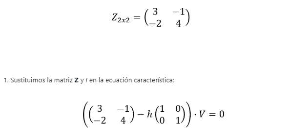
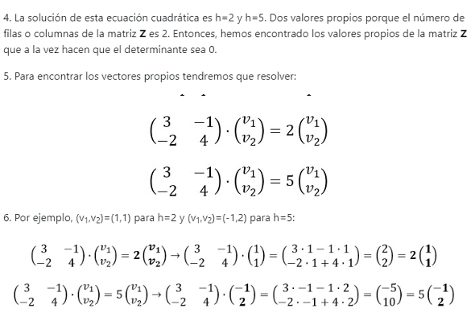
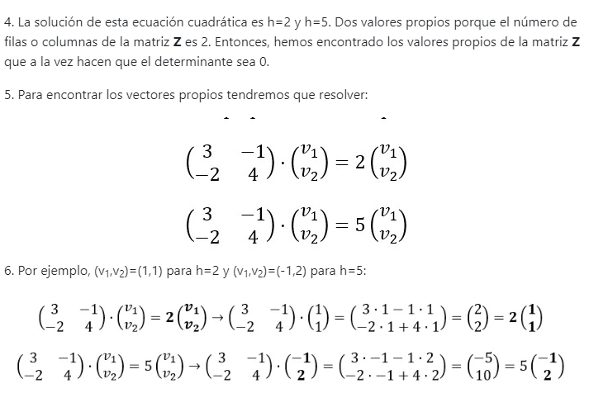

Formula de Vectores
Valores: La constante h es el valor propio que pertenece al vector propio V.
Cada valor propio tiene infinitos vectores propios dado que existen infinitos números reales que pueden formar parte de cada vector propio.
Son escalares, pueden ser números complejos y pueden ser idénticos, y existen tantos valores propios como número de filas (m) o columnas (n) tiene la matriz original.
 

Valor y Vector propio de una transformación lineal
Las transformaciones lineales intervienen en muchas situaciones en matemáticas y son algunas de las funciones más importantes.
- En geometría modelas las simetrías de un objeto, en algebra se pueden usar para representar ecuaciones, en análisis sirven para aproximar localmente funciones.
Ecuación Caracter
- Es una ecuación algebraica de grado n de la que depende la solución de una ecuación diferencial de orden n o de una secuencia lineal recurrente dada. Esta solo se puede formar cuando la ecuación diferencial o de diferencia es lineal y homogénea, y tiene coeficientes constantes. En tal ecuación deferencial, y denota la variable dependiente, el superíndice (n) denota la n-ésima derivada
polinomios
El polinomio característico de la matriz A se obtiene por medio de expresión:
|A - λI| = 0
El resultado de esta determinante es un polinomio en función de λ de grado igual al orden de la matriz A, en este caso, de orden n. Este polinomio característico posee n raíces o valores característicos; por lo cual, la matriz A de orden n posee n valores característicos.